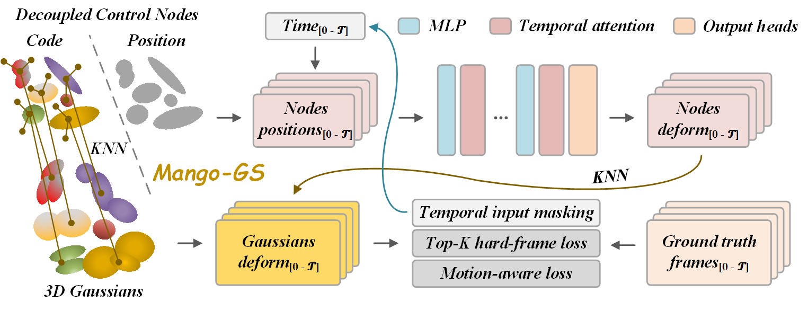

Decoupled control nodes
Canonical positions provide stable spatial anchors while latent codes carry motion features without coupling identity to instantaneous deformation.
Overview
Reconstructing dynamic 3D scenes with photorealistic detail and strong temporal coherence remains a significant challenge. Existing Gaussian splatting approaches for dynamic scene modeling often rely on per-frame optimization, which can overfit to instantaneous states instead of capturing underlying motion dynamics. To address this, we present Mango-GS, a multi-frame, node-guided framework for high-fidelity 4D reconstruction.
Mango-GS leverages a temporal Transformer to model motion dependencies within a short window of frames, producing temporally consistent deformations. Temporal modeling is confined to a sparse set of control nodes for efficiency. Each node uses a decoupled canonical position and latent code, providing stable semantic anchors for motion propagation and preventing correspondence drift under large motion.
Approach
Sparse control nodes model motion over short temporal windows, then propagate temporally coherent deformation to the dense Gaussian representation.

Canonical positions provide stable spatial anchors while latent codes carry motion features without coupling identity to instantaneous deformation.
A compact Transformer learns dependencies across neighboring frames on sparse nodes instead of operating over millions of Gaussians.
Grouped frame sampling, input masking, and multi-frame objectives improve temporal consistency under fast motion and partial observation.
Multi-view video
Novel-view renderings for all six scenes. Videos are encoded at 2x dataset playback speed.
Monocular video
Novel-view renderings across topology-changing and articulated motion sequences, shown at the fixed HyperNeRF review speed.
Real-time rendering
Mean deform-and-render speed recorded for the ten displayed scene/view outputs on NVIDIA RTX 3090 GPUs.
145.0FPS
Reference
Please cite Mango-GS when using the code, models, or results.
@inproceedings{huang2026mangogs,
title = {Mango-GS: Enhancing Spatio-Temporal Consistency in Dynamic Scenes Reconstruction using Multi-Frame Node-Guided 4D Gaussian Splatting},
author = {Huang, Tingxuan and Zhu, Haowei and Yong, Jun-hai and Pan, Hao and Wang, Bin},
booktitle = {International Conference on Learning Representations},
year = {2026}
}